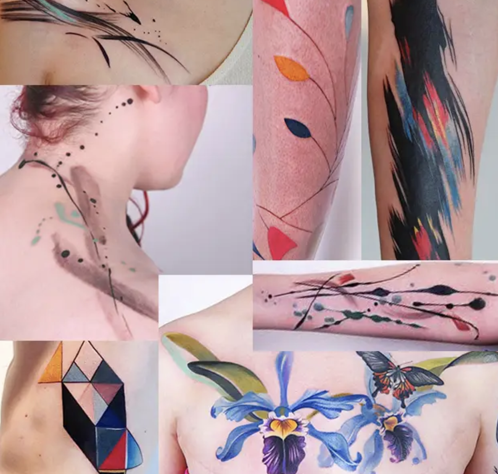
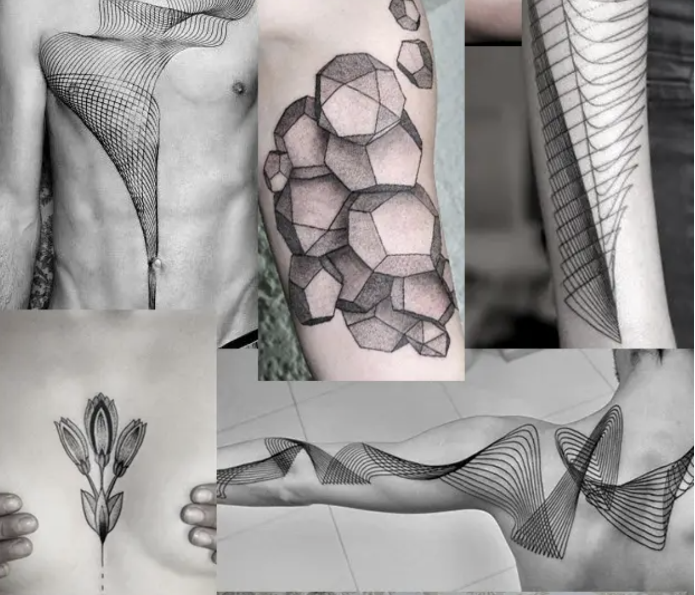
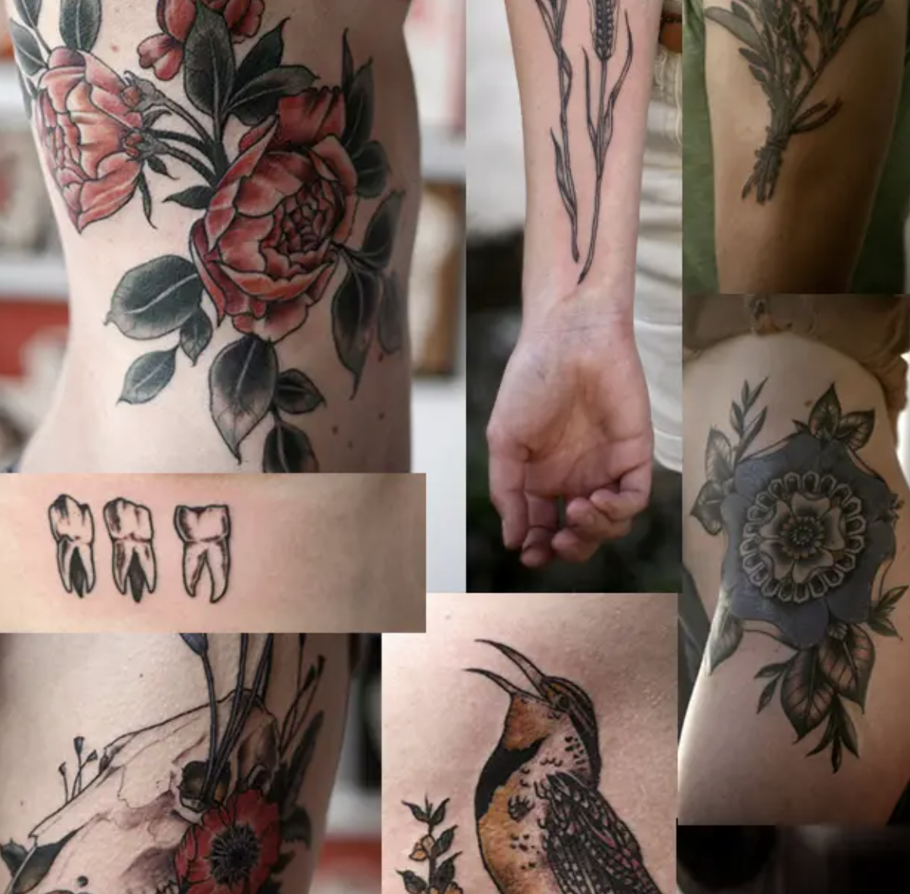
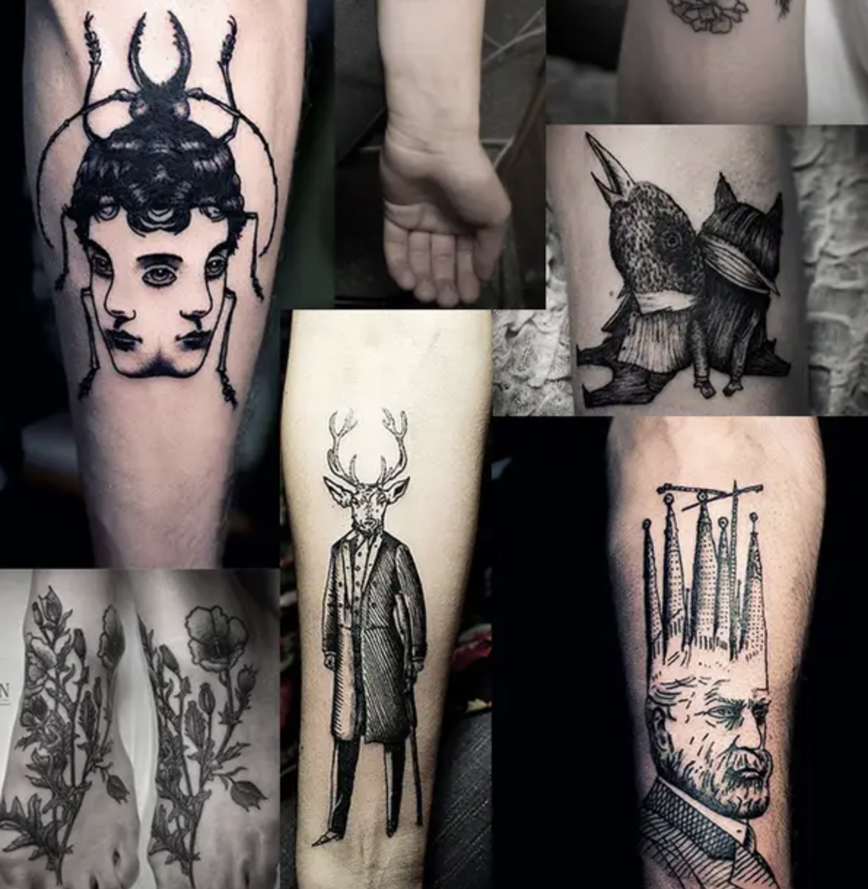
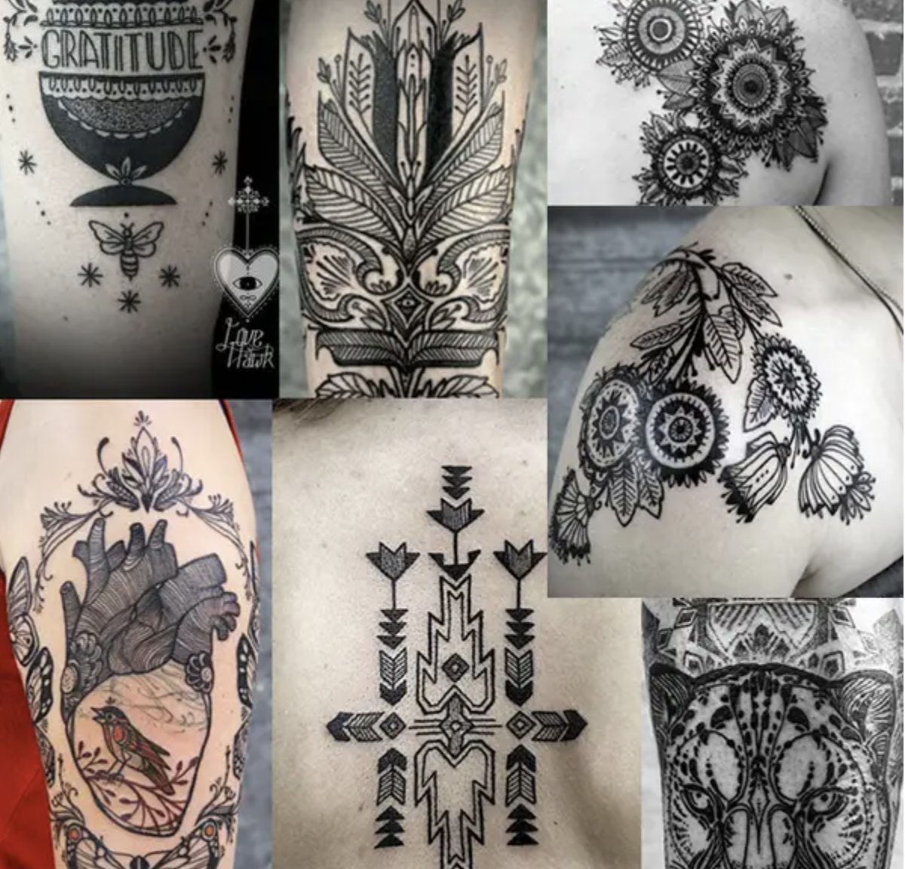
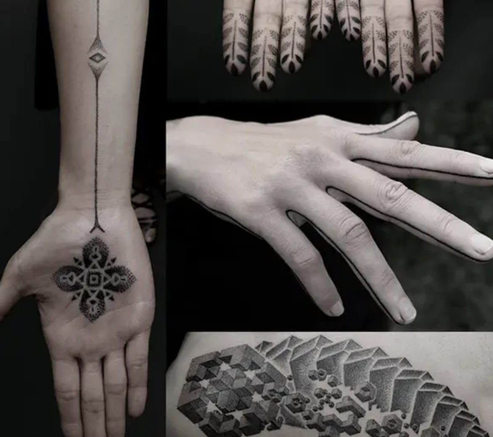
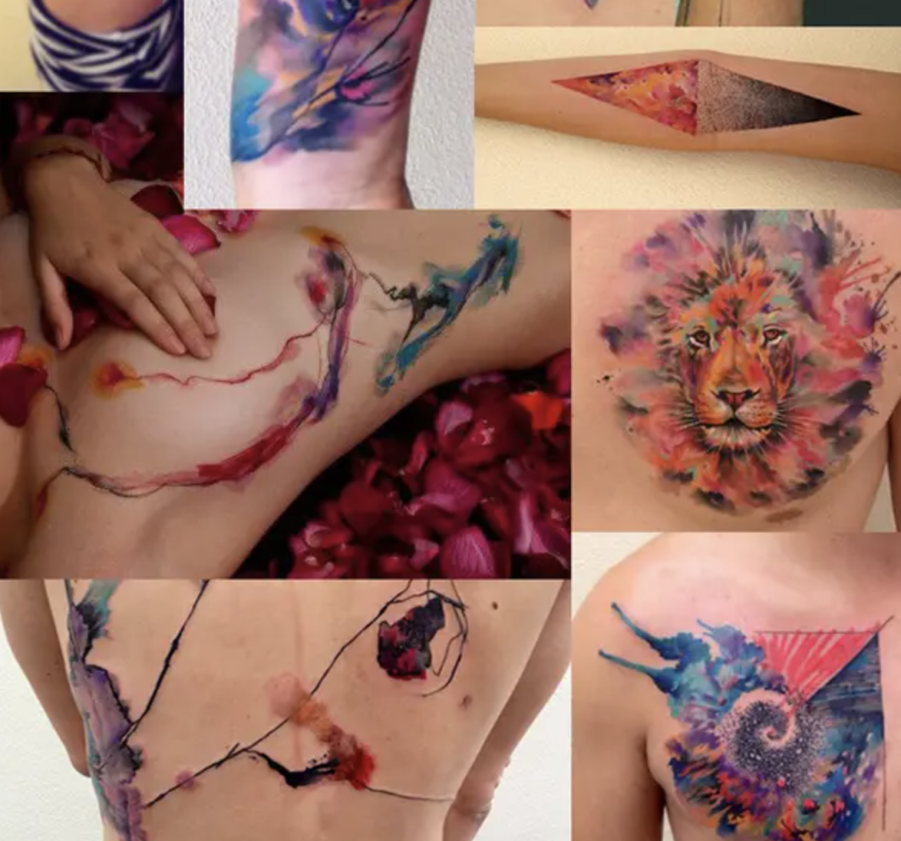

The most popular tattoo artists in the world
| Masterpiece |
Name |
Description |
Place |
| Amanda Wachob |
 |
Amanda Wachob is capable of anything with ink and her works look just like real paintings. |
Brooklyn, New York |
| Chaim Machlev |
 |
In the tattoo world, it is known as DotsToLines. He creates geometric tattoos that combine complexity and purity. |
Berlin, Allemagne |
| Alice Carrier |
 |
If you want a tattoo that looks straight out of a vintage herbarium or biology textbook, treat yourself to a plane ticket to visit Alice in Portland. |
Oregon (USA) |
| Ien Levin |
 |
Ien only works with black ink. Its very elaborate style exudes a dark and fantastic atmosphere. |
Kiev, Ukraine |
| David Hale |
 |
At Love Hawk, his tattoo parlour, David declines his magnificent folk drawings. |
Athens, Géorgie (USA) |
| Kenji Alucky |
 |
Kenji is known for his pointillist technique. Her tattoos employ geometric and tribal patterns that are worth admiring up close. |
Japon |
| Marcin Aleksander Surowiec |
 |
Marcin uses vivid inks to create very vivid surreal tattoos. |
Varsovie, Pologne |
| Ondrash |
 |
The name Ondrash has almost become a brand as his specialty, watercolor tattooing, is so successful. |
République Tchèque |